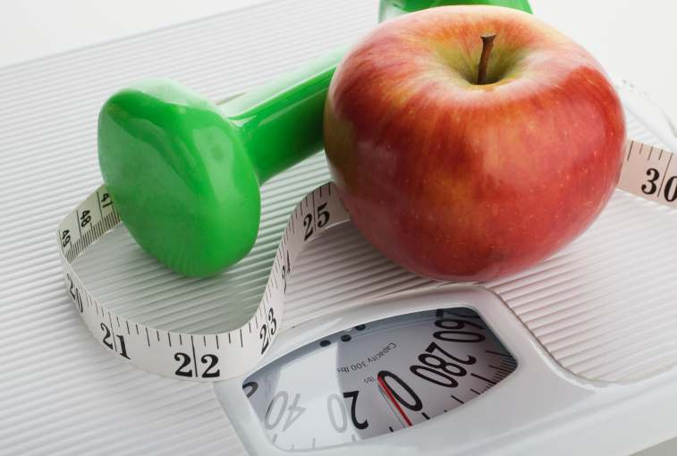
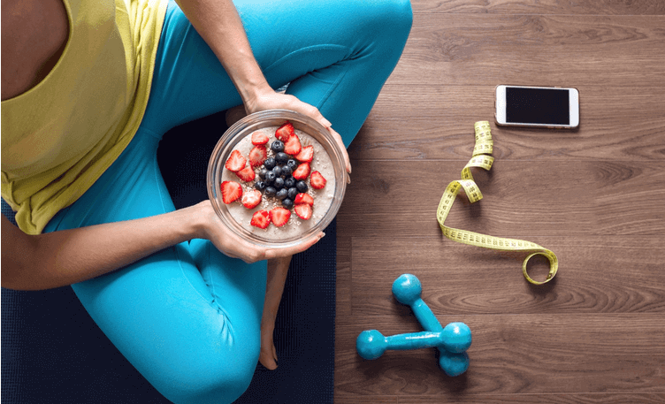

Weight Gain is an increase in body weight.This Can Involve an increase in
muscle mass , fat deposits , excess fluids such as water or other factors. Weight Gain
can be a symptom of a serious medical condition.
Weight gain occurs when more energy (as calories from food and beverage consumption) is gained
than the energy expended by life activities,
including normal physiological processes and physical exercise.

If enough weight is gained due to increased body fat deposits, one may become overweight or obese,
generally defined as having more body fat (adipose tissue) than is considered good for health.
The Body Mass Index (BMI) measures body weight
in proportion to height, and defines optimal, insufficient, and excessive weight based on the ratio.
Having excess adipose tissue (fat) is a common condition, especially where food supplies
are plentiful and lifestyles are sedentary. Overweight and obesity may increase the risk of
several diseases, such as diabetes, heart disease, and some cancers, and may lead to short- and
long-term health problems during pregnancy.Rates of obesity worldwide tripled from
1975 to 2016 to involve some 1.8 billion people and 39% of the world adult population.
A commonly asserted "rule" (the Wishnofsky Rule, aka Wishnofsky's Rule) for weight gain
or loss, is based on the research of Max Wishnofsky (December 17, 1899 - August 2, 1965),
a Russian-born physician who had a medical practice in Brooklyn, New York. The Wishnofsky
Rule states that one pound of human fat tissue contains about 3,500 kilocalories (often simply
called calories in the field of nutrition). Wishnofsky conducted a review of previous observations
and experiments on weight loss and weight gain, and stated his conclusions in a paper he published in
1958.Thus, according to the Wishnofsky Rule, eating 500 fewer calories than one needs per day should
result in a loss of about a pound per
week. Similarly, for every 3500 calories consumed above the amount one needs, a pound will be gained.

Wishnofsky noted that previous research suggested that a pound of human adipose tissue is 87% fat, which equals 395 grams of fat. He further assumed that animal fat contains 9.5 calories per gram. Thus one pound of human fat tissue should contain 3750 calories. He then critically analyzed the relevant literature and applied a number of additional assumptions, including that the diet contains sufficient protein and that the person is in glycogen and nitrogen (protein) equilibrium, leading to most weight loss stemming from the catabolism of fat. He concluded that a 3500 calorie excess or deficit for a person meeting his assumptions, would lead to the gain or loss, respectively, of one pound of body weight. He noted that if the assumptions he made are not met, a deficit of 3500 calories would not necessarily equate to a pound of weight loss.
Wishnofsky did not take into account numerous aspects of human physiology and biochemistry which were unknown at the time. The claim has achieved the status of a rule of thumb and is repeated in numerous sources, used for diet planning by dietitians and misapplied at the population level as well.
Being physically inactive can also lead to obesity , if body is physically inactive the excess energy is stored as fat and it leads to obesity
If You Wish To Gain Weight Naturally Visit Here